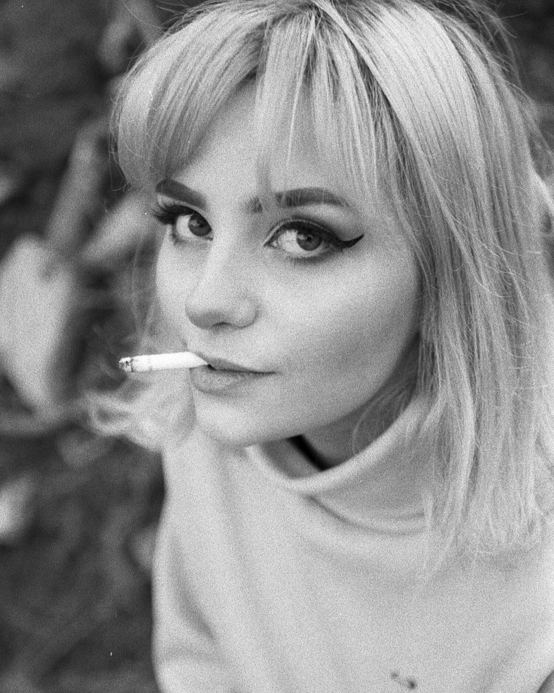
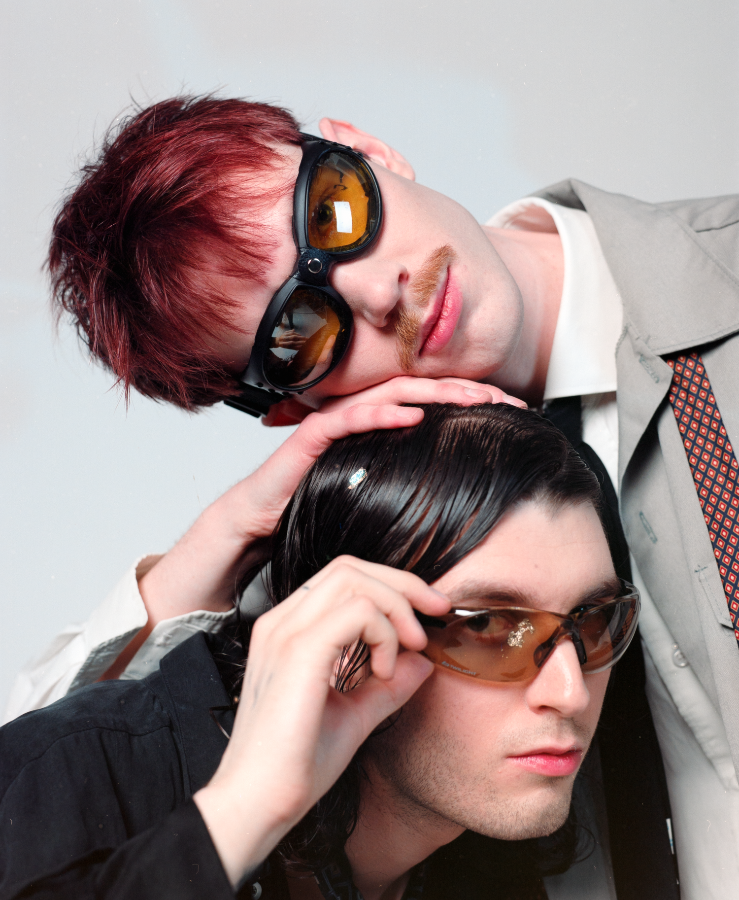
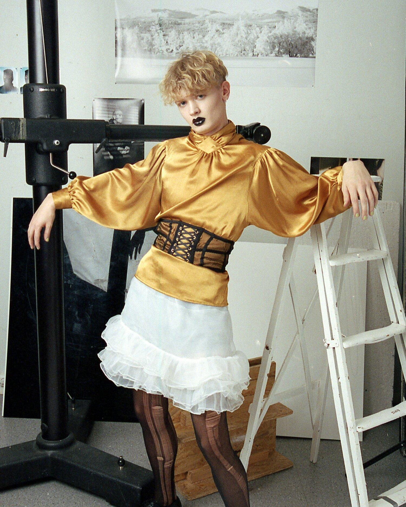
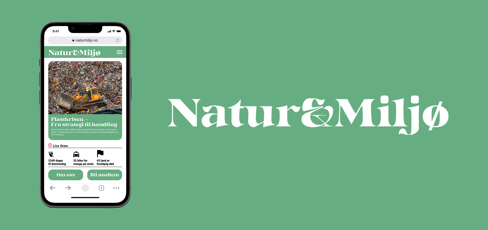

MH
Martin Hofseth, graphic designer in Oslo, Norway
(
About
↓
)
MH
Filter
Rockslo
2025
Total rebrand of Under-18 event organizer Rockslo’s brand
Graphic Design
Visual profile
Eversnow
2022
Music video for single release “Eversnow” by IMGFound
Music video
Motion graphics
▶ Watch
“Du er her”
2023
A critique of the ordinary and everyday monotony explored through the spirit of psychogeography
Graphic Design
Booklet
AI zines
2022–2023
A series of zines about AI and its effects on our society and industry
Graphic Design
Book Design
Booklet
Snøblind
2021
A critique of the ordinary and everyday monotony explored through the spirit of psychogeography
Graphic Design
Photography
Booklet
Portraits
A collection of portraits from throughout the years
Photography



Natur&Miljø
2022
Prototype of a new mobile website for the magazine “Natur&Miljø”
Graphic Design
Web

Eksponeringsterapi
2023
Music video for Daufødt and Lasse Marhaug’s collaborative cassette
Music video
▶ Watch